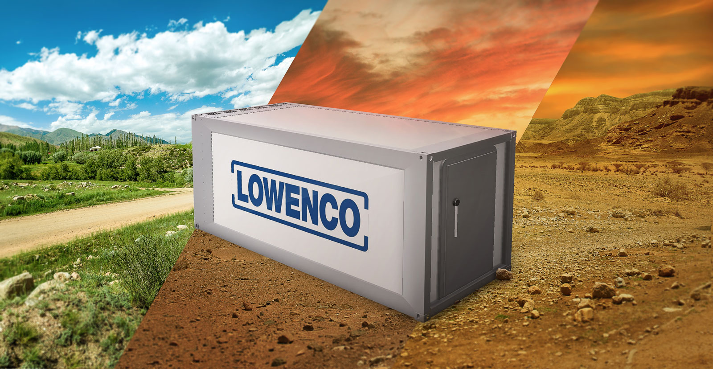

Medical container
Gotham's been good to our family, but the city's been suffering. People less fortunate than us have been enduring very hard times. So we built a new, cheap, public transportation system to unite the city. And at the center, Wayne tower. I see a beautiful city and the brilliant people rising from this abyss.

Agroculture container
Gotham's been good to our family, but the city's been suffering. People less fortunate than us have been enduring very hard times. So we built a new, cheap, public transportation system to unite the city. And at the center, Wayne tower. I see a beautiful city and the brilliant people rising from this abyss. I see the lives, for which I lay down my life. Peaceful, useful, prosperous and happy. I see that I hold a sanctuary in their hearts and in the hearts of their descendents. Generations ends. That is the far, far better thing that I do than I have ever done. That is a far, far better rest that I go to than I have ever known.
Military container
Gotham's been good to our family, but the city's been suffering. People less fortunate than us have been enduring very hard times. So we built a new, cheap, public transportation system to unite the city. And at the center, Wayne tower. I see a beautiful city and the brilliant people rising from this abyss. I see the lives, for which I lay down my life. Peaceful, useful, prosperous and happy. I see that I hold a sanctuary in their hearts and in the hearts of their descendents. Generations ends. That is the far, far better thing that I do than I have ever done. That is a far, far better rest that I go to than I have ever known.
Custom orders
Gotham's been good to our family, but the city's been suffering. People less fortunate than us have been enduring very hard times. So we built a new, cheap, public transportation system to unite the city. And at the center, Wayne tower. I see a beautiful city and the brilliant people rising from this abyss. I see the lives, for which I lay down my life. Peaceful, useful, prosperous and happy. I see that I hold a sanctuary in their hearts and in the hearts of their descendents. Generations ends. That is the far, far better thing that I do than I have ever done. That is a far, far better rest that I go to than I have ever known.